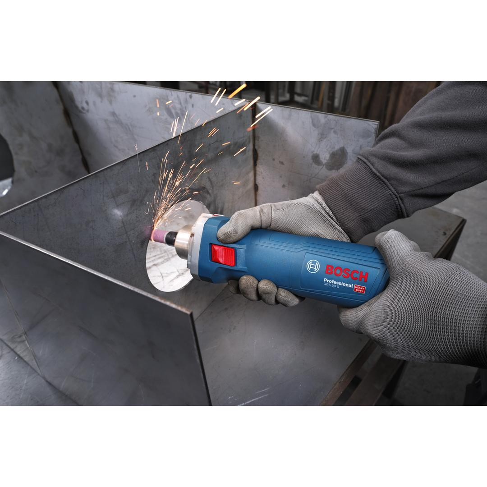
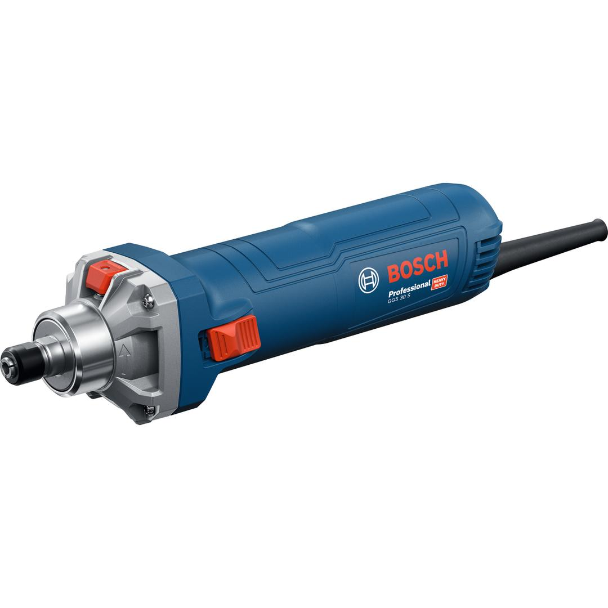

06012B51K0


The GGS 30 S Professional is a powerful straight grinder built for optimal convenience and safety. This high-performance tool comes with a strong 750 W motor for top efficiency. Precision work is easy thanks to a speed dial for multiple grinding accessories and materials. Plus, with the convenient spindle lock function, you only need one wrench to change accessories . Thanks to its short neck, this tool can be fitted on a CNC machine and used as a routing device.
| No-load speed |
7,000 – 33,000 rpm |
| Rated input power |
750 W |
| Spindle collar diameter |
43 mm |
| Weight |
1.500 kg |
| Tool dimensions (width) |
78 mm |
| Tool dimensions (length) |
294 mm |
| Tool dimensions (height) |
77 mm |
| Max. grinding tool diameter |
25 mm |
| Power output |
400 W |
| Max. collet diameter |
6 mm 1/4'' 3 mm 8 mm |
| Spanner size of locking nut |
17 mm |
| Spanner size of grinding spindle |
17 mm |
| Max. polishing tool diameter |
45 mm |
| Switch |
Lockable Switch |
| Collet diameter supplied |
6 mm |
Powerful, versatile, safe: the high-performance grinder for all grinding tasks
The GGS 30 S delivers up to 33,000 rpm for heavy-duty grinding jobs. It is the tool of choice for metal polishing, deburring surfaces and material removal.
Additional design features include an ergonomic handle with a comfortable grip size, KickBack Control, soft start, and restart protection.